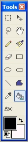

Paint Bucket Tool
|  The Paint Bucket Tool (Tools-->Paint Bucket) fills an area with a specific color. You choose an area on the active layer and hit either the left mouse button (foreground color) or the right mouse button (background color) to fill that region. The region is defined as an area on the active layer that has a uniform color. It must be noted that this tool operates best on hand drawn images, and not so well on photographs. This is due to the fact that photographs have many shades of the similar color, which doesn't allow for a nice uniform paint operation. |